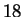
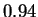

|
[Visual Cues Formant Tracking]
[width=0.9]figs/onlylines.eps
[ESPS Formant Tracking]
[width=0.9]figs/espscomp.eps
|
We compare the proposed visual cues based approach described in this paper to extract and track formants with the formant extraction module of the ESPS[2] package. Fig. 5 shows the outputs generated by the two approaches. Fig. 5(b) was generated using the formant utility included with the ESPS package. The formant utility was invoked with an LPC order of , a window duration of ms, frame step-size of ms and a pre-emphasis of , which are the same as those used for generating the spectrogram shown in Fig. 1(b). The output of the ESPS formant utility is shown in Fig. 5(b). A comparison of the two figures in Fig. 5, reveals that the the visual cues method is very sensitive to the presence of high energy peaks and can capture detail very well. The ESPS package connects the detected formants in each frame by using a modified Viterbi algorithm [2]. This involves additional post-processing of the formants. The visual cues method is able to generate reasonably smooth and connected formant trajectories without any post processing. Also, it is seen that the visual cues method performs better that ESPS in the unvoiced sections, by generating continuous tracks in these sections, as seen from figures, Fig. 4 and Fig. 6, while both the techniques seem to work equally well in the voiced regions of the speech signal.
We compare the actual extracted formant frequency values obtained by the formant tracking method proposed by us in this paper and that used by ESPS in the voiced segments of the speech signal in Table 1. It can be observed that the average difference in the extracted formant frequencies between the visual cue based method and that used by ESPS is minimal. In the unvoiced segments of the speech signal, the difference between the two methods is large and is not a good metric for comparison. A visual comparison is a better way to compare the two methods in the unvoiced segments. From a visual comparison, it is apparent that the visual cues method out performs the formant function of the ESPS in the unvoiced segments of speech.
|
|
[width=0.9]figs/espsoverlay.eps |